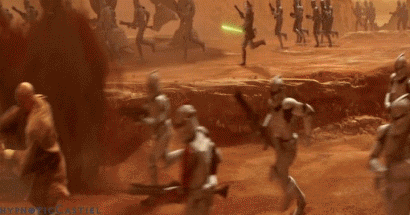
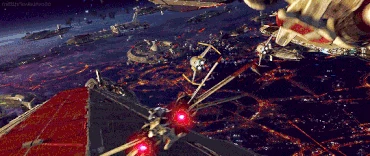
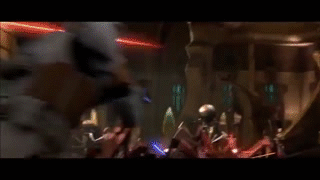
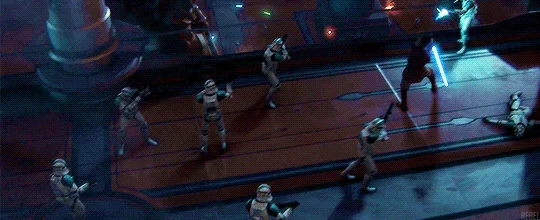
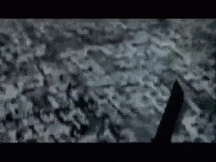
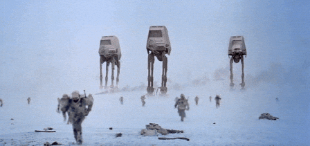
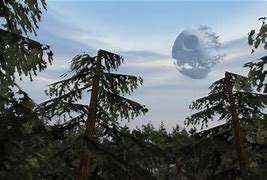

There are several events within the star wars timeline and on this page we will go through them all in cronological order
The units we will use are BBY=before battle of Yavin and ABY=after battle of Yavin
the battle of Naboo 32 BBY

The battle of Naboo is the center of the phantom menace in this battle Naboo was being occupied by the trade federation
In a desperate attempt to save ger home Queen Padme Amidala turns toward the galactic republic for help.
After being denied she turns to the other society on Naboo
The Gungans. The Gungans are a species native to the sea of Naboo after political descussions the Gungans agree to help the Naboo
as the naboo attacked the capital to take the trade federation leaders hostage
the Gungans divert the droids to the feilds of Naboo where the deadlist battle in this event takes place
As the AAt tanks fire shots at the Gungan sheilds they march their droids towards the front lines of the gungans
Even though the droids have longer range they are unable to utilize it because of the sheilds which force the droids
to move within meters of the gungans who are equpped with smaller handheld shields.
After several hours of fighting the gungans surrender to the droids. During the battle in the feilds of Naboo Several
Noobian pilot hostages were freed by Queen Amidala and her squad those pilots would hop into their ships and fly off to
fight the droid star fighters and destroy the trade federations blockade. During the starship battle little Anakin skywalker
flies into the and blows up the whole ship causing all ground units to shut down all the droids. While all that is happening
Obi-wan Kenobi and his master Qui-gon jinn encounter Darth Maul. After Obi-wan and Qui-gon get seperated by sheild genertors,
Qui-gon is locked in a deul with Maul. Several minutes go by and Obi-wan is still trapped forced to watch his master as Maul
stuns Qui-gon and stabs him through his intestines. Just then the shield opens and Obi-wan engages Darth Maul. Maul knocks Obi-wan
down into a deep pit but Obi-wan catches himself on a light and jumps up uses the force to grab Qui-gons light saber flips over
Mauls head and cuts him in half.
the battle of genosis 22 BBY

the Battle of genosis began when Padme Amidala, Anakin Skywalker, and Obi-wan got captured and thrown into an arena
where they have to fight three dangerous creatures to survive. After they defeated all the creatures Mace windu a jedi master
confronts the sith Count Dooku and all the jedi reveal themselves to be in the crowd and they all jump into the pit as thousands
of battle droids flood into the arena all the droids begin shooting at all the jedi and the jedi are cutting through the droids.
then out of the sky republic gunships land dropping off clone troopers the droids quickly lose the small confrontation and jedi and
clone troopers pile into gunships and fly off towards the massive sepratist star ships. The ships land and all the clones and jedi
flood onto the rocky terrain of genosis as dust from the landing gunships fly into the air both sides droids and clone troopers begin
firing blindly into the dust. as the dust begins to clear sepratist tanks fire armour pericing rounds destroying everything the hit.
In return the republic clone AT-TE tanks return heavy artillry fire and destroy several droids. In this battle the droids used several
new tehnology's the galaxy ha never seen before like B-2 Battle Droids, Spider Droids, Dwarf Spider Droids, and Hailfire Droids. As the
Clones continued to push the droids back through heavy fire they began to set up command posts and AA(anti-air) turetts to counter vulture
droids and tri-droids even vulture droid bombers. After an hour of battle Count Dooku begins to flee sending the droid army into chaos.
as Count Dooku runs away he persued by Obi-wan and Anakin. During the pursuit the dorid army begins to leave the planet but in the attempt
Clone AA turrets focus fire on the massive star ships as they begin to leave the planet surface. During the massive shoot out between the
Dorids and Clones obi-wan and Anakin pursue Count Dooku when they catch him they engage in a shocking deul as he electocutes obi-wan with
force lightning and cuts off anakins right hand. Just when it seems like the jedi cannot win Master Yoda shows up and begins to fight the
sith. When Count Dooku uses his force lightning on him Yoda absorbes the lightning and redirects it. As a distraction Count Dooku attempts
to crush Anakin and Obi-wan with a peice of debris but yoda catches it but Count Dooku escapes. Although Count Dooku would eventually escape
this is a massive clone win at the begining of the clone wars.
The battle of corusant 19 BBY

The battle of corusant was fought rpiamrly in space although there was a seperatist invasion on the planet surface to capture chancellor
palpatine. The invasion force was primarly a distraction so general Grievous could capture the chancellor and take him aboard the main
command ship. During the battle Obi-wan and Anakin board the command ship. They have some trouble with the evevator but they make it to
the top floor where they find the chancellor. Before they can release the chancelor they are confronted by Count Dooku. During the battle
Obi-wan gets knocked out when he got sent flying into a wall. Shortly after Anakin cuts Count Dookus hands off and holds both light sabers
to his throat and hesitates weather he should kill him or not. After seconds of holding the lightsabers to the counts throat the chancellor
says "do it". But it ends up sounding more like "dew it" and Anakin cuts off Dookus head. As the three are escaping they are captured by General
Grievous and Obi-wan and Anakin are forced to deul Grieviouses guards. During the battle it's discovered that these droids can survive without
their heads. During this small conflict the battle outside damages the ship causing it to begin to tear apart. As all the droids are escaping
incuding General Grievous Anakin, Obi-wan and the chancellor attempt to land the ship. As they enter the atmosphere the ship rips in half
they deploy everything they can to increase drag and land softly.
the battle of Utapau 19 BBY

Later in the year of the battle of corsant was the battle of Utapau. The Battle of Utapau was adeadly battle for both the clones and
droids. This battle was engaged when the rupublic got word that General Grievous was hiding out with other seperatist leaders. He had
told them to move to the Mustafar system in the outer rim of the galaxy. Obi-wan was the first person to make contact on Utapau and engaed
general Grievous with his iconic "Hello there" as Obi-wan was deuling grievous the 212th clone battalion shows up to take on the droids
during the battle Obi-wan obtains a blaster and shoots general grivous in the chest killing him quickly.
Order 66(the rise of the empire) 19 BBY

During the battle of Utapau the chancellor sent out a message to all clones saying "execute order-66" which triggered the chip in their brains
to betray the jedi immediatley without hestitation clones across the galaxy got the message and jedi everywhere were killed. Every clone followed
the order expept for the Bad Batch, Captain Rex, Commando Gregor, and several others. But majority of the clones turned on their jedi and killed
them. During this event at the jedi temple on corusant the 501st clone trooper legion led by Anakin Skywalker now Darth Vader stormed the temple to
kill all the jedi in there. They even slaughtered younglings. Even in these encounters several jedi also survived like Cal Kestis, Kanan Jurass, Ahsoka
Tano, Master Yoda, Obi-Wan Kenobi.
The battle of Yavin 0BBY

The battle of Yavin was a turning point in the war against the empire. The rebels secret base had been located on Yavin4 one of the many moons above the
planet Yavin. With the location in the hands of the Empire they began to move their most dangerous weapon the DEATH STAR and it has ability to blow up
planets. Before the battle began the rebels had received the plans for the Death Star and discovered that there was an exaust port that they could shoot
a torpeado into which would cause the whole thing toblow up. As the Death Star began to move closer the rebels mobilized all of thier pilots for one final
offensive attack in hopes of destroying the deathstar before it could destroy Yavin4. As the fleet of x-wings and Y-wings began to advance upon the Death Star
they were met with an opposing fleet of tie fighters and tie intercepters. As the battle raged on most of the rebel Y-wing bombers were wiped out so they began to
send x-wings into the trench to blow it up. Then it was RED 5(Luke Skywalker) turn as he flew through the trench three tie fighters flew up behind him in an attempt
destroy Luke. The tie fighter in the middle was flown by Darth Vader. As the tie fighters were about to destroy Luke the Milenium Falcon flies in and destroys the two
tie fighters on either side of Darth Vader which causes him to stall and spiral out of control. As that happens Luke fires his torpeados and it's a direct hit so
all the remaining ships quickly flew away as the dreaded Death Star blew up behind them.
The battle on Hoth 3 ABY

The battle on Hoth was a very deadly battle as the empire had once again found the rebel hide out. They sent down several AT-AT(all terrain-armoured transport) tanks
and AT-ST walkers were also sent down to the surface to advance upon the sheild generators to destroy them so the several star destroyers in the sky could fire all thier
Turbo canons on the base. which would effectivley kill every rebel on the planet. As the rebels jumped into the trenches and set up turrets and machine guns. Pilots hoped into
snow speeders which were more effective within a plantes atmosphere thn and x-wing. They were also built to withstand cold temperatures and snow. As rebel scouts surveyed the horizon
AT-AT walkers were wpotted and they snow speeders flew out of the hanger. To directly shoot the AT-AT. The rebels quickly relized that the armour on AT-AT was to thick for the
blasters on snow speeders. With this new found information Luke Skywalker came up with a brilliant idea. They used toe cables which were mounted on the back of snow speeders
to latch on the AT-AT's legs and fly in circles around them to trip them. As luke was telling his back shooter to load toe cables the circuts fried and shot back killing Lukes
back shooter. So Luke leads another snowspeeder remotley from his to trip a AT-AT. Shortley after Lukes snowspeeder gets shot down. He crashes into the planets surface
The battle of the forest moon of Endor 4 ABY

The battle of the forest moon of Endor also know as the battle of endor was a long battle. It began when rebel troops landed on the moon and began searching for the sheild
generator.